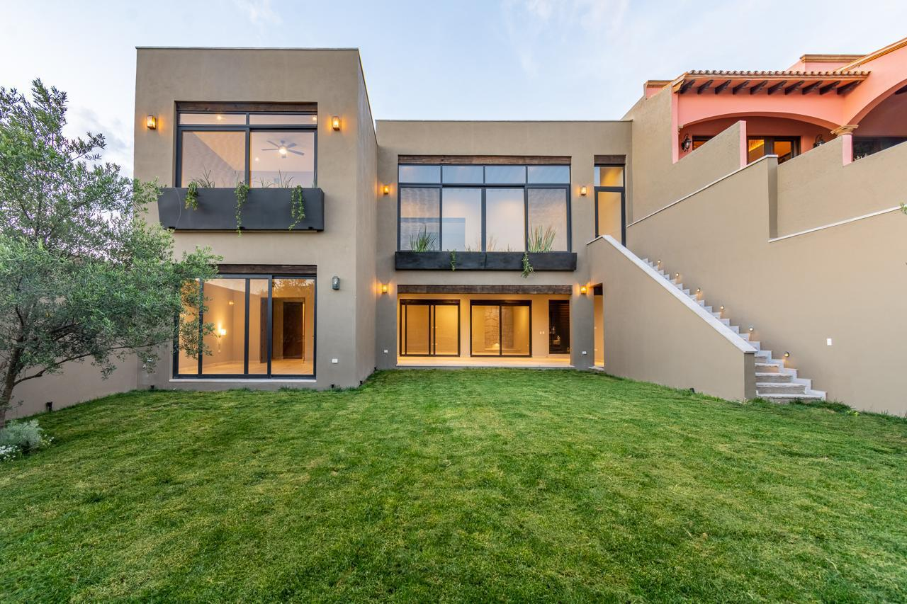

 Grupo Inmobiliario · CDMX · León · Guanajuato · San Miguel de Allende
Grupo Inmobiliario · CDMX · León · Guanajuato · San Miguel de Allende
¿Qué le trae a PRAETORA?
¿En qué ciudad?
Dónde quiere comprar, o dónde está la casa que quiere vender.
Todavía no publicamos casas en .
Cuéntenos qué busca o qué quiere vender, y le escribimos.
Escribir por WhatsApp